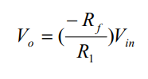

Design of Inverting and Non Inverting amplifier using Op-amp IC 741
SOFTWARE/SIMULATION PLATFORM:
ORCAD AND TRISLABS
THEORY:
In fact, that’s where the name “op-amp” came from: the ability of a high-gain differential amplifier circuit to perform the mathematical operations of adding, subtracting, integrating and differentiating. With a bit of clever circuit design, multiplication and division can also be done.
Inverting amplifier: Input to the amplifier is applied to the inverting terminal of the opamp. The voltage gain is dependent on the feedback resistor and the input resistor. The output of the amplifier is 180° out of phase with the input voltage.

Non-inverting amplifier: Input to the amplifier is applied to the non-inverting terminal of the op-amp. The output is in phase with the input voltage applied.